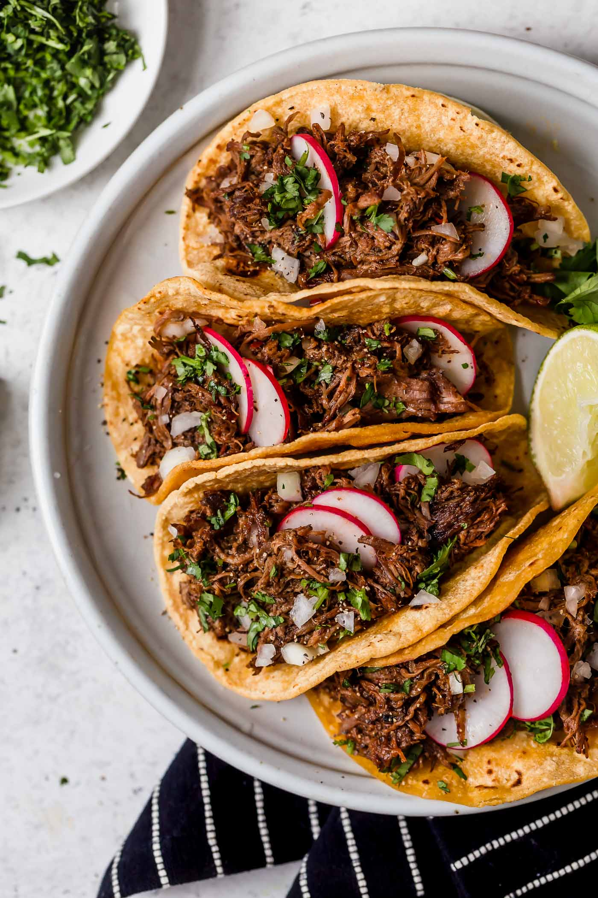

Barbacoa Tacos

Savory Barbacoa Tacos
With an ABUNDANCE of flavor, these Barbacoa Tacos will surely give your party an extra KICK!
Ingredients
- Chuck roast
- Salt and pepper
- Chipotle chilis
- Cumin, bay leaves, oregano, and cloves
- Fresh lime juice
- Vegetable oil
- Beef broth
- Garlic
Cooking Instructions
- Cut roast into 6 portions, remove any large pieces of fat. Heat 1 Tbsp vegetable oil in a skillet.
- Using paper towels, dab Chuck roast dry. Season with salt and pepper. Add 3 pieces to skillet, remove once brown on all sides. Transfer to slow cooker
- Add 1 Tbsp of vegetable oil to skillet, repeat previous step with remaining 3 pieces. Transfer to slow cooker.
- Using a food processor, puree chipotle chiles, garlic, and 1/4 cup of beef broth.
- In a bowl mix together remaining beef broth, chipotle mixture, cumin, oregano, and cloves. Pour this over beef already in slow cooker. Pop bay leaves in between beef.
- Cover slow cooker and cook on low for 8-9 hours.
- Remove beef from slow cooker and leave the broth. Shred the beef. Add fresh lime juice to broth. Reintroduce beef into the broth and cook on low for an additional 20-30 minutes.
- Strain/capture broth from beef and serve beef on tortillas with any desired toppings.